版本资料
13.5-S8强化符文搭配
金铲子老组长 2022-04-15 16:48:40 字体：
前言(当前版本：13.5)
欢迎各位来到S8赛季，给云顶之弈带来无限新鲜感的强化符文被保留了下来，既有熟悉的机制被保留也有新的机制推出。 号外! 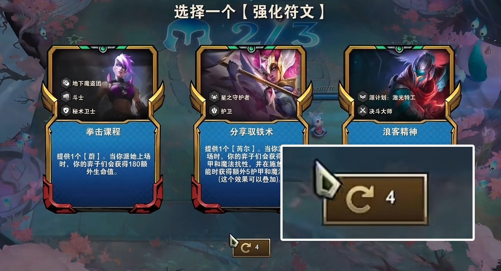 “【云顶之弈】团队正在降低变数，以在英雄强化符文选择方面创造更多欢乐时刻和自主性。” 现在，如果强化符文环节出现了英雄强化符文，那么你就会有4次英雄强化符文的重随机会。这些重随机会不会影响你的常规强化符文的重随机会。
“为什么是4次?【云顶之弈】团队之所以选择4次刷新机会，是因为这个数额几乎必定会为你提供一个你的阵容能够成功用上(并且你也想让你的阵容用上)的强化符文。这个改动的目标有二，一是避免你在刷到对你的阵容没有提升的英雄强化符文时心态崩掉，二是避免让那些确实想要享受特定的强化符文但时间又有限的玩家们败兴而归。” 英雄强化符文的重随机会将总会提供一批全新且独特的英雄强化符文。也就是说，不会重复刷到相同强化符文。 新机制英雄强化
为了应对怪兽来袭，英雄们通过“英雄强化”进一步提升了自己的实力!选择阶段将为你提供三种英雄强化以供选择，你可以从中选择一种，为你的英雄小队确定自己的主力或者用来过渡。任何人都能成为英雄——每个弈子都有两种专属的英雄强化。其中一种英雄强化会让你的英雄具备极强的个人能力，另一种则是激励队友的团队增益，齐心协力为他们完成艰难的任务。 出现时间及刷新
英雄强化的选择会随机出现在对局中选择强化符文，即原有的2-1、3-2、4-2中的某个阶段，且仅会出现一次。英雄强化的选择也可以使用“刷新”功能，但全局中可刷新四次，并不影响常规符文的一次刷新次数。注意在极少数情况(8%，已在下表中标出)下会没有英雄强化出现哦。通过翻译云顶设计师的推文，下面我们为硬核玩家们提供一个实用的具体概率表格： 2-1 3-2 4-2 总和出现概率
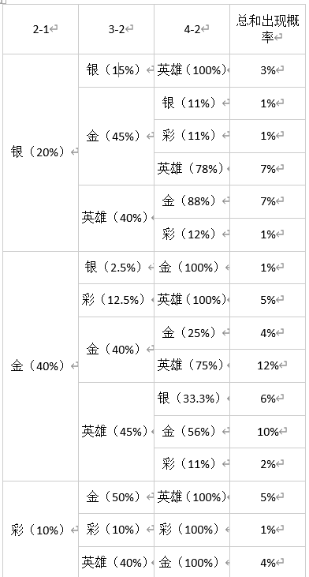
在云顶，有些强化符文配合相得益彰，在一起产生化学反应达到1+1大于2的作用。有的强化冤家路窄，知道哪些强化不适合搭配在一起，可以减少你在选择时的纠结，直接排除错误选项。 这篇强化符文搭配将长期更新，以更新版本热门强制棋子及阵容为核心，同时也会推荐一些好玩的趣味搭配，为各位棋手抛砖引玉。 版本强势搭配 1金币 1金币棋子的强化只可能在2-1出现。
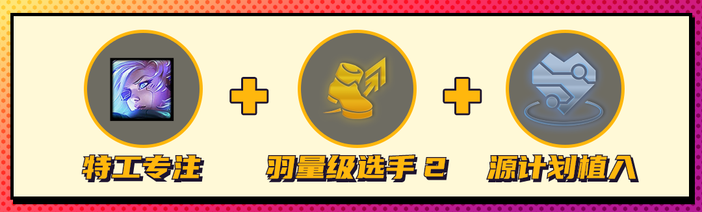 艾希：激光专注/特工专注+羽量级选手2/实战训练+源计划植入
随着艾希一波一波的回调，艾希重回云顶1费赌王有了机会。1费棋子中艾希是最稳定的C位是毫无争议的，低费C位缺乏上限需要更多伤害类强化符文作为补偿。
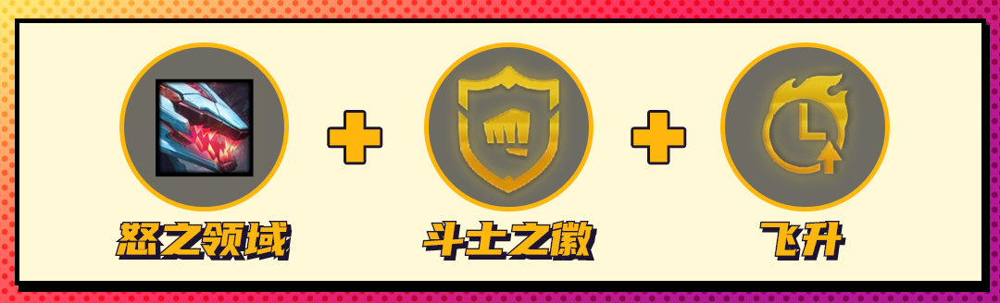 雷克顿：怒之领域+斗士之徽+飞升
鳄鱼开高斗带怒之领域的玩法已经席卷云顶，超高血量意味着超高的攻速和技能伤害，肉的一批的同时伤害还高，配上斗士之徽开更高的斗士羁绊，再配合飞升进一步拉高伤害，挺进决赛圈易如反掌。
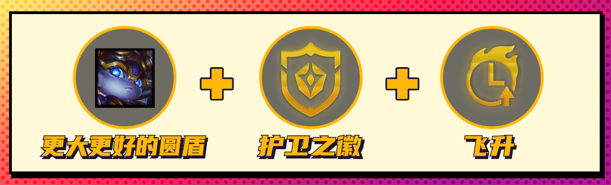 波比：更大更好的圆盾+护卫之徽+飞升
13.5更大更好的圆盾将为波比提供180护甲!如果再搭配高护卫给到的护甲，波比的技能将轻松秒杀对手的后排。最后一个符文可以拿战斗法师，源计划甲壳等继续提高护甲，也可以拿复苏之风回复血量，但最佳的是飞升，按乘法提高波比的伤害，这个波比强化绝对的任何物理阵容的噩梦。
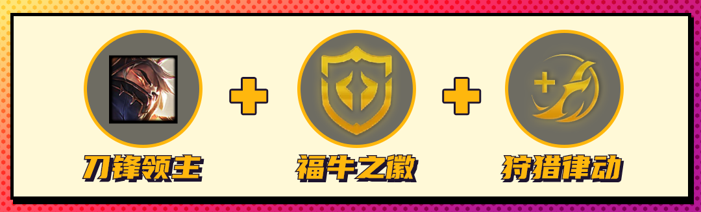 泰隆：刀锋领主+福牛守护者之徽+狩猎律动
福牛和混沌依旧是比较强势的羁绊，而泰隆又自带能单切后排的机制，这注定了他是一张很强的卡。可以拿刀锋领主直接赌，也可以拿福牛之狂怒转佛耶戈，有同羁绊的大哥兜底日子就是好过。配合单杀特性狩猎律动/公理圆弧都是很强的符文。
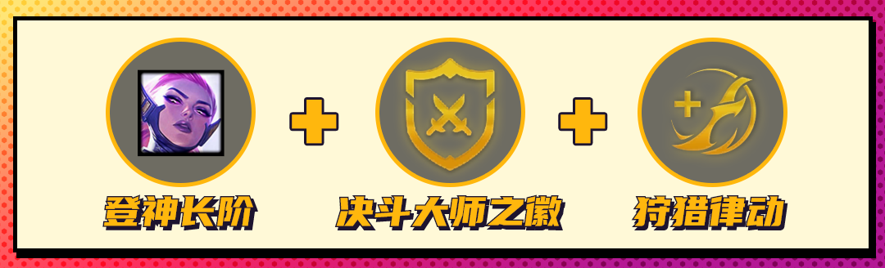 凯尔：登神长阶+决斗大师之徽+狩猎律动
艾希倒下后，凯尔现在是1费赌狗的牌面了，登神天使相当于多一件光明火炮一件光明飓风，手持额外两件光明装备的C位输出有多猛可想而知了。最好有一个续航符文，这样天使可以把续航装的位置继续留给输出装。
孙悟空：大闹天宫+复苏之风2+战斗机甲之徽
赌猴子依旧是吃分比较稳健的阵容，因为前中期猴子太肉对手很难彻底打死他，尤其是还有一口复苏之风的加持之下。最后战斗机甲之徽可以方便在蕾欧娜找到之前开出5机甲。
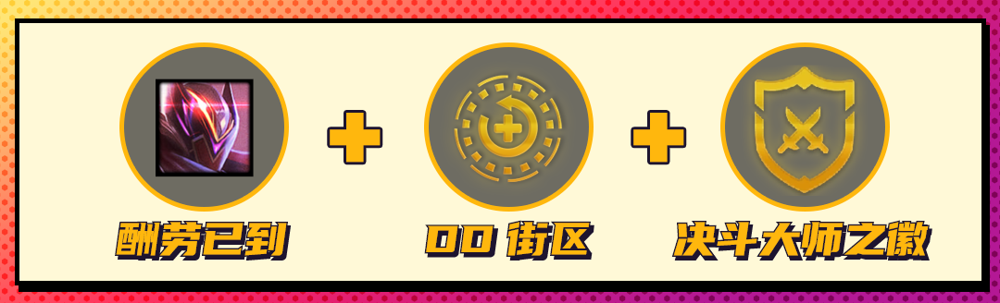 普朗克：酬劳已到/烈焰弹射+DD街区2+决斗大师之徽
烈焰弹射大幅加强了普朗克的技能伤害，酬劳已到目前50%击杀出金币可以快速滚雪球，拿到后直接当赌狗抽牌给压力，3超级英雄能赌的阵容非常多，抽卡提战力，战力能打钱，直接形成云顶永动机。 2金币 2金币棋子的强化可能在2-1和3-2出现。
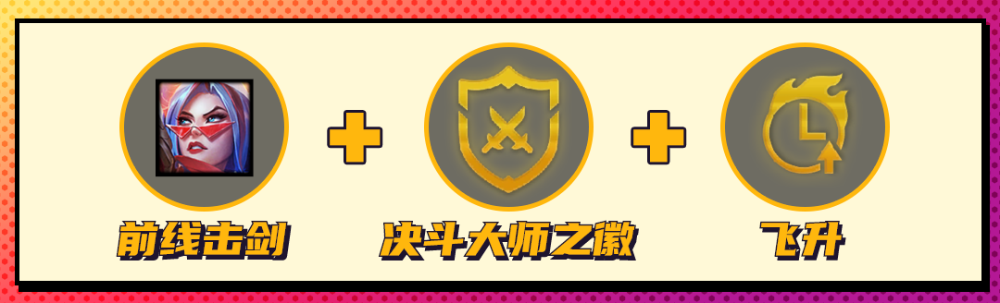 菲奥娜：前线击剑+决斗大师之徽+飞升
菲奥娜也是一直在被加强，现在菲奥娜的C位强化前线击剑数值已经非常夸张，拿下后菲奥娜几乎是和金钟罩盲僧一样顶的前排，她一人单顶拖到飞升，决斗的鬼畜攻速就能融化对手。
金克斯：罪恶快感+幻灵战队之徽+公理圆弧
罪恶快感金克斯非常疯狂，击杀后不断刷新攻速移速加成，搭配7幻灵可以直接开赌从前期开始滚雪球叠血量，后期公理圆弧的击杀回蓝效果和金克斯击杀加攻速的效果相得益彰。
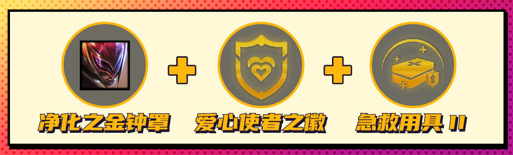 李青：净化之金钟罩+爱心使者之徽+急救用具2
净化之金钟罩这个强化能让李青的蓝条变为40，每次释放技能还能恢复18%已损失生命值，而重复释放技能意味着爱心使者法强越叠越高，到最后技能能做到不停承伤开技能，盾越来越厚，血越来越多，如果再搭配急救用具，李青的坦度将难以想象。
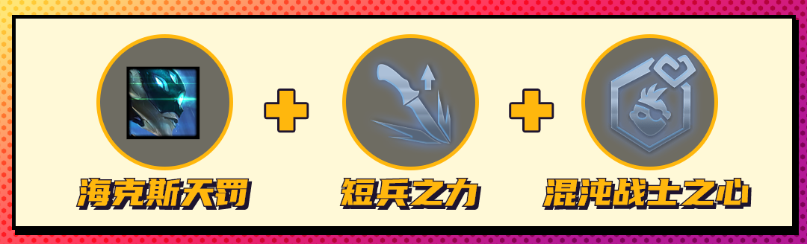 卡密尔：海克斯天罚+短兵之利+混沌战士之心/徽/魂
2费棋子中最强的物理前排就是卡密尔，无论是最后选择卡密尔C还是转佛耶戈C她的两个强化符文都能提供百分比伤害上限，玩混沌战士最好有一个转职来开6混沌补充上限。
伊泽瑞尔：咒能高涨+公理圆弧+珠光莲花
当前版本EZ技能伤害大加强，遇到咒能高涨可以直接赌EZ，其余的符文只需要尽全力提高EZ的爆发即可，公理圆弧可以帮助EZ快速叠咒能高涨。
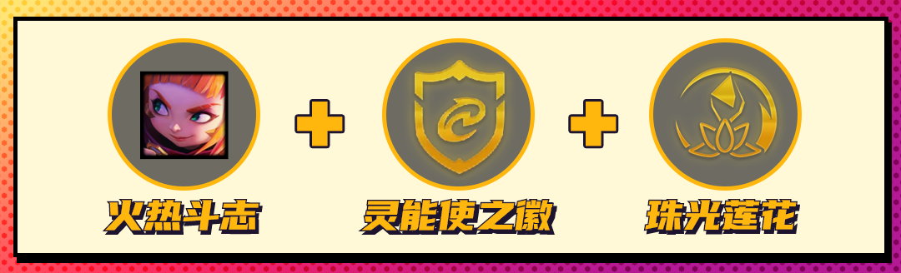 安妮：火热斗志/反射护盾+灵能使之徽+珠光莲花
安妮的两个强化其实强度都还不错，尤其是反射护盾在13.3版本得到了加强，但鉴于安妮超级棒的户口，在任何法系阵容几乎有着100%的登场率，所以玩法系看到安妮可以无脑拿。
德莱文：德莱文联盟/冷酷利刃+战斗机甲之徽+飞升
德莱文的强度依旧在线，两个强化符文都可以直接拿来赌德莱文，可以3超级英雄，也可以开出5机甲后随便挂4精英或者4秘术，拖到飞升都非常强势。
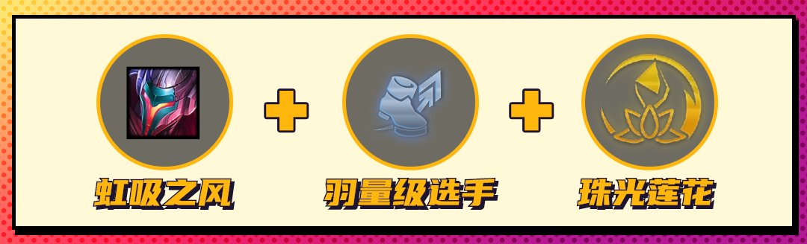 亚索：虹吸之风+羽量级选手+珠光莲花
虹吸之风提供的吸血数值简直让人看不懂，拿到可配合超级英雄直接赌亚索，还是3源计划3超级英雄那一套，亚索可以出全输出装，还可以补泰坦水银，配合各种战斗力符文来打出很强的统治力。 3金币 3金币棋子的强化一般在3-2和4-2出现，极少数在2-1出现。
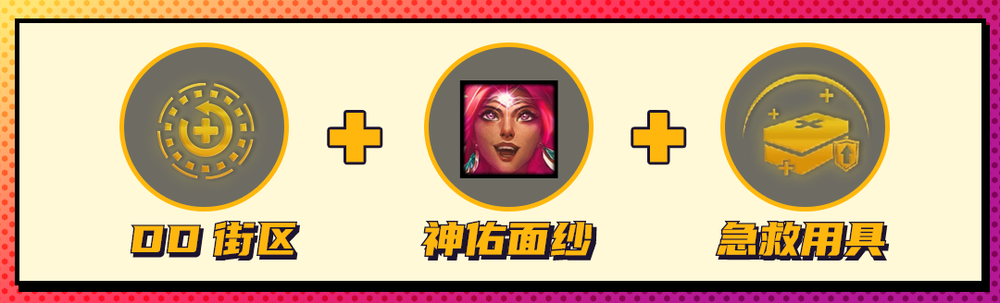 尼菈：DD街区+神佑面纱+急救用具
注意这可不是决斗尼菈，而是星守猫咪尼菈。神佑面纱能让猫咪阵容全队免控30秒，再也不担心抱团站被AOE控制了。由于尼菈的治疗量被削弱了一些，需要一个急救用具来补充回复能力。
薇恩：情报特工之心+扩散射击+组件百宝袋
扩散射击的爆炸强度已经得到了充分的验证，有了扩散射击的薇恩完全不缺持续伤害，只需要怪兽的坦度和提高技能暴击率，所以情报加怪兽的组合会比高决斗的组合更合理。由于前排三星后都需要装备，所以可以选择组件百宝袋作为补充。
拉莫斯：三费之力2+锥刺甲壳+源计划甲壳
拉莫斯的锥刺甲壳也是基于护甲值反弹伤害的手段，就如同圆盾波比，在高护甲时可以让围上了的对手吃到成吨的伤害。
 佐伊：卢登的回声+双重气泡+蓝电池
佐伊：卢登的回声+双重气泡+蓝电池
可预测拼多多佐伊是整个云顶S8法系阵容的热门之选，佐伊羁绊多过渡丝滑输出稳定，很容易抽到2星锁血，对于佐伊而言最重要的就是提升技能释放频率，能多次触发的卢登的回声收益恒，蓝电池在S8可以和蓝BUFF叠加，让佐伊释放技能完全停不下来。
乐芙兰：AI程序之心+协助瞄准+虚假前线
暗星回蓝妖姬缺被削弱了，但是法强效果依旧还很强。协助瞄准可以提高妖姬的爆发，虚假前线的假人是唯一可以给妖姬提供暗星效果的，其余的如传送门，扎克被动都不行，所以虚假前线是神级符文。
 赛娜：好事成双+赦除+星界赐福
赛娜：好事成双+赦除+星界赐福
设计师删除了银色的好事成双，因为银色的强度不足以特地为了它搞特殊阵容，这也说明金色和彩色的好事成双强度是绝对够的。赛娜猪妹鳄鱼绝配铁三角配合希维尔，这套偷分阵容你值得拥有。
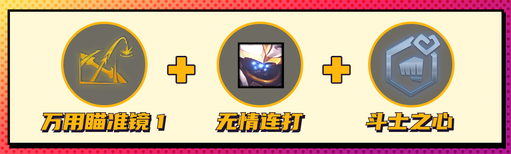 贾克斯：万用瞄准镜1+无情连打/躲闪+斗士之心/徽/魂
武器最近连续加强回暖，但现在非常依赖瞄准镜才能玩武器。还是6人口快速2星即可快速锁血，万用瞄准镜1可以防止武器逛街，s8这个符文可以提供2格攻击距离，非常超值。选择无情连打可以不带羊刀，选择躲闪可以减少回血装和半肉装。 4金币 4金币棋子的强化可能在3-2和4-2出现。
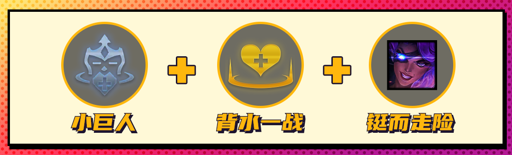 莎弥拉：小巨人+背水一战+铤而走险
拿到铤而走险，你的小小英雄每失去10生命值，你的弈子们就会获得3.5%攻击速度。小巨人将使你额外吃到3层这个效果，背水一战则能防止暴毙，最大化吃到这个符文带来的增益。
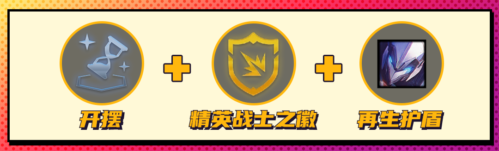 瑟提：开摆+精英战士之徽+再生护盾
机甲最适合的阵容就是瑟提机甲当前排，后排挂精英战士，最好是有精英之徽这样容易开4精英，给到精英转稻草人收割能力非常强。因为阵容前期不好过渡，除非嫖卡很顺不然可以考虑开摆或超级加倍养经济。
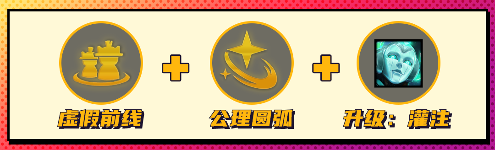 索拉卡：虚假前线+公理圆弧+升级：狂暴/灌注
随着岩雀的削弱，爱心奶妈成为法系阵容新贵。由于爱心使者只要拖得住就有无限的法强，所以强化符文尽量提升准儿坦度。公理圆弧是奶奶最强符文，正好可以让奶妈无限放技能。
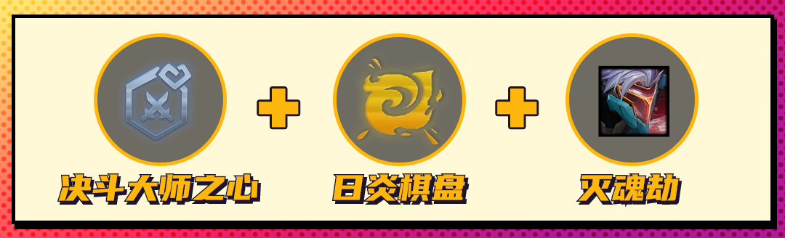 劫：决斗大师之心/徽/魂+日炎棋盘+灭魂劫/夺影术
夺影术和劫单卡增强，决斗阵容依旧强势，无论是高决斗还是4决斗拼多多的劫有一个决斗转职都会丝滑很多，由于战斗速度很快并且不好带重伤，我们可以通过日炎棋盘来补足。目前来说灭魂劫是强于夺影术的，决斗大师很吃这个冲刺效果。
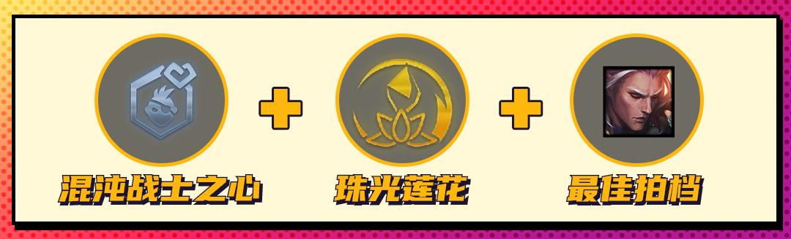 佛耶戈：混沌战士之心/徽/魂+珠光莲花+最佳拍档/痛贯心灵
佛牛佛爷永远是高费阵容中可玩的选择，玩混沌战士最好有一个转职来开6混沌补充上限，珠光莲花可以帮助佛耶戈突破伤害上限达成连斩，目前来说最佳拍档是强于痛贯心灵的，因为最佳拍档提供吸血佛耶戈就可以多带一件输出装，并且这个加成是给到全队的。 4金币怪兽思路
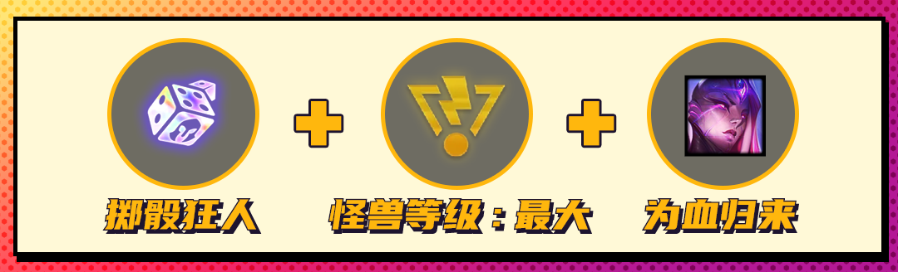 卑尔维斯：掷骰狂人+怪兽等级：最大+为血归来
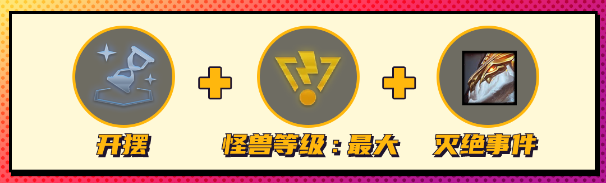 索尔：开摆+怪兽等级：最大+灭绝事件
以上思路都是类似的，前期拿灌铅筛子或开摆直接连败只拿怪兽渡过前期，由于灌铅筛子投怪兽是只能出怪兽卡的，所以收益很高。在每次刷新节点的时候小抽一些全上怪兽卡，这样出怪兽等级：最大的概率很大，如果是金色强化值得刷新一次来找这个专属符文，最后全是怪兽的场面必然能刷到怪兽的英雄强化，选择最合适的就好。 5金币 5金币棋子的强化只可能在4-2出现。
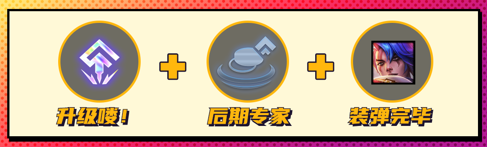 厄斐琉斯：升级咯+后期专家+装弹完毕
5金币的强化更多是想要这枚棋子，目前还没有出现特别超模的5金币强化，以常平民枪阵容当C位的厄斐琉斯举例，平民枪手阵容就很适合这一套符文，5费大C的阵容要多拿一些经济类强化，尤其是彩色多的局更适合拿来玩。
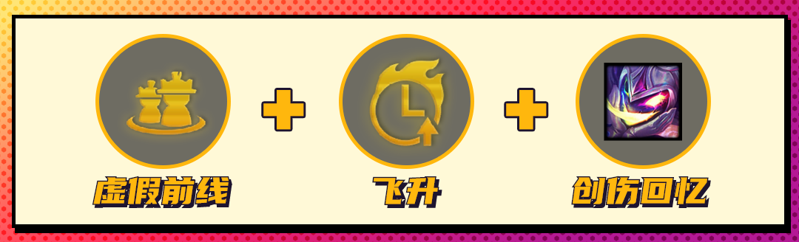 费德提克：虚假前线+飞升+创伤回忆
从可以刷新4次海克斯的版本开始，如果到了5费强化，你基本能刷出你固定想要的那枚符文了，所以为特定五费强化组建一套强化符文搭配有了意义。虚假前线是唯一可以为稻草人提供2层被动的手段，飞升能以乘法提升稻草人跳出来后的伤害，献祭你的棋子，让对手感受创伤回忆吧。
 蕾欧娜：星界赐福+公理圆弧+完美的日炎耀斑
蕾欧娜：星界赐福+公理圆弧+完美的日炎耀斑
还记得群英冠冕吗，完美的日炎耀斑能使蕾欧娜的法力值降为45，配合蓝buff的20和公理圆弧的30点回蓝，蕾欧娜能无限释放技能!配合星界赐福的吸血和战斗机甲的坦度，一一点名融化对手吧。